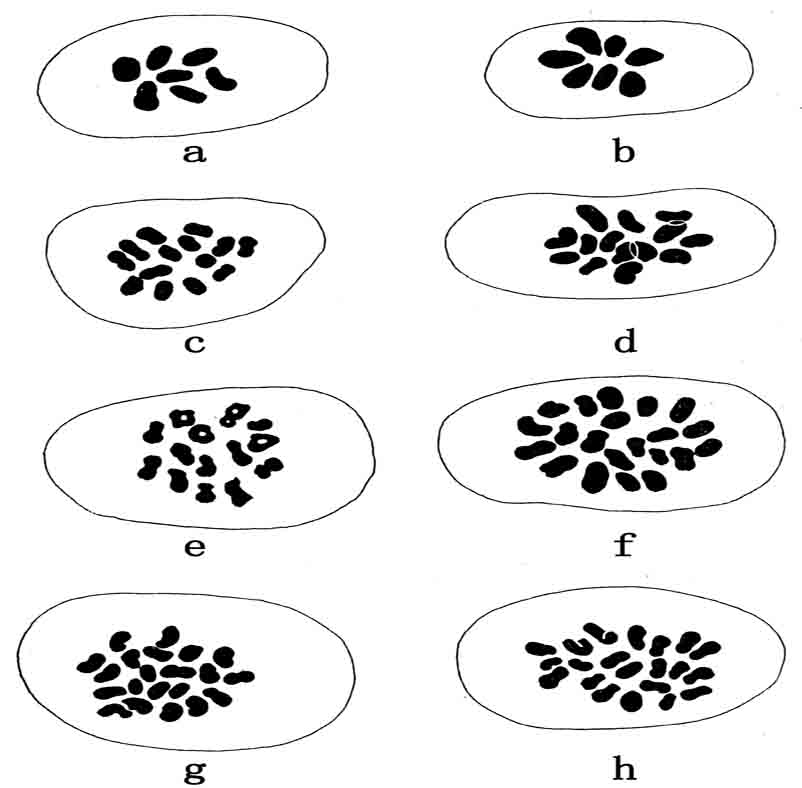
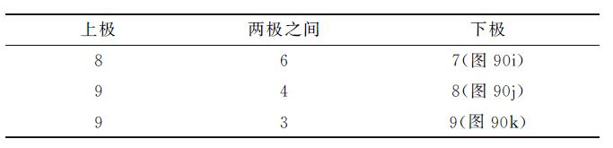

多倍体小麦
谷类如小麦、燕麦、黑麦和大麦，都有一些多倍染色体群。以小麦一系研究最为广泛，其杂交后的少数杂种类型也已经检查过了。单粒小麦（Triticum monococcum）的染色体最少，共14条（n＝7）。单粒小麦属于单粒（Einkorn）群，Percival（1921）把它的根源追溯到新石器时代的欧洲。另一型为爱美尔小麦群，有28条染色体，生长在史前时代的欧洲以及早在公元前5400年的埃及，直到希腊—罗马时代，才被含28条染色体的小麦和软粒小麦群中一种含42条染色体的类型（图88）所代替。爱美尔小麦群内变种最多，但软粒小麦群却有更多的不同“类型”［原文为forms］。
有几个人研究各种小麦的染色体，最近的有坂村彻（1920）、木原均（1919，1924）和Sax（1922）的研究。以下大部分取材于木原均的专著，一部分引用了Sax的论文。下表表示观察到的二倍染色体数目以及观察或估计到的单倍数目。


图88 二倍体、四倍体和六倍体小麦减数分裂后的染色体数目（仿木原均）

图89 二倍体、四倍体和六倍体小麦第一次成熟分裂即减数分裂（仿Sax）
图88a（单粒小麦），图88c（坚粒小麦）以及图88h（软粒小麦）各代表单倍型群。图89从Sax处获得，表示上述各群的正常成熟分裂。单粒小麦（Einkorn）有七条二价染色体（即接合染色体），在第一次成熟分裂时，二价染色体各分为二，每极得七条染色体。没有一条逗留中途的。子细胞进行第二次分裂，七条染色体各自纵裂为两半，每极得七条。爱美尔小麦型有14条二价染色体，在第一次成熟分裂中，二价染色体各分裂为二，每极得14条。在第二次成熟分裂时，染色体各自纵裂，每极得14条染色体。软粒小麦Vulgare型有21条二价染色体，在第一次成熟分裂中，二价染色体各分裂为二，每一极得21条。在第二次成熟分裂时，染色体纵裂，每极得21条。
这一系类型可以解释为二倍体、四倍体和六倍体。每一类型都是平衡的，每一类型都是稳定的。
在上述各种不同染色体数目的类型中，有几个类型进行过杂交，产生了各种不同组合的杂种，其中有一些稍具生殖能力，有一些完全不孕。有几种组合的父母两方，各有不同的染色体数目；从这些染色体的行动中，揭露出来一些重要关系。现在用几个例子说明于下。
木原均研究了爱美尔型和软粒型杂交的杂种，爱美尔型有28条染色体（n＝14），软粒型有42条（n＝21），而杂种却有35条，所以是一个五倍体杂种。当成熟时（图90a~d），有14条二价染色体和七条单染色体。二价染色体各自分裂，每极得14条；单染色体则零乱分布于纺锤体上，并且在“减数”染色体分别走到两极以后，仍然滞留在那里（图90d）。随后，这些单染色体各自纵裂，子染色体分别走向两极，但不十分整齐。当染色体平均分布时，每极会得到21条染色体。

图90 杂种小麦的减数分裂（仿木原均）
这里应该附带提到Sax研究三倍体小麦的结果，这时七条单染色体并不分裂，而是不平均的分布到两极，最常见的比例是3∶4（图91）。

图91 爱美尔小麦和软粒小麦的杂种，示减数分裂（仿Sax）
根据木原均的记载，在第二次分裂时，出现了14条正在纵裂中的染色体和七条不分裂的染色体。前者分裂开来，每极得14条；其余七条单染色体则零乱地分布，最多见的是三条到一极，四条到另一极。Sax认为七条单染色体以及14条减数后的染色体都在第二次分裂时为二。
不论哪一种解释适用于单染色体（在别的生物中两种解释都有先例可援），一个明显的重要事实是：只有14条染色体，才互相接合。至于究竟是爱美尔小麦的14条染色体与软粒小麦的14条染色体互相接合，或者是爱美尔小麦的14条联合成七条接合体，而余下七条单染色，这一点从细胞学证据看来，是不明确的。在这些组合或其他类似组合（这一种产生可育性杂种）方面的遗传学研究，也可能提供决定性证据，不过目前这方面研究还是缺乏的。
木原均又用有14条染色体（n＝7）的单粒小麦同有28条染色体（n＝14）的爱美尔小麦杂交。杂种有21条染色体，为三倍体。当杂种生殖细胞（花粉母细胞）成熟时，其染色体分布情况比上例更乱（图90e~k）。接合染色体的数目多少不一，染色体之间的联合，如果发生的话，也不完全。下表表示二价染色体数目上的变化。

第一次分裂时，二价染色体分裂为二分，每半走到一极。单染色体在未达到一极或另一极时，不是每次都有分裂；有些未经分裂，便达到两极，另一些先行分裂，每半各趋一极。七条单染色体滞留在两极染色体群之间的中央平面上，也并不少见（图90i）。下表表示三次测定的数字。

第二次分裂时一般有11或12条染色体：有些是二价染色体（纵裂），其他为单染色体。前者分裂正常，子染色体走入一极或另一极；单染色体却以不分裂状态，分布到此极或彼极。
从这项证据说来，在杂种里，不可能决定究竟是什么染色体在接合。二价染色体既未超过7条，说它是爱美尔小麦的14条染色体彼此接合也可以。
从爱美尔小麦同软粒小麦杂交中得到了可孕性杂种。木原均研究过在F 3 、F 4 和以后世代中一些杂种进行成熟分裂时的染色体。各植株的染色体数目多少不一，在成熟分裂中某些染色体的分布也不规则，从而引起更多的紊乱，或者重新建立像在一个亲型那样的稳定类型，等等。这些结果虽然在研究杂种遗传上是重要的，不过太复杂了一些，不适合我们目前的目的。
木原均研究了软粒小麦和一种黑麦的杂种，软粒小麦有42条染色体（n＝21），黑麦有14条染色体（n＝7）。杂种（有28条染色体）可以称为四倍体。按照很早的观察，这个从极不相同的两个物种杂交所生的杂种，是不孕的，但另一些观察者却认为是可孕的。
当生殖细胞成熟时，看到的接合染色体很少甚至没有，如下表所示：

第一次分裂中，染色体在两极上的分布，很不规则；最多只有少数染色体，在到达两极以前，分裂开来；有些单染色体则散布在细胞质内。在第二次分裂时，许多染色体纵裂，那些在第一分裂中分裂了的染色体则行动迟缓，慢慢地走到一极；落后染色体的数目比第一次分裂时的落后染色体却少多了。
小麦同黑麦杂交中最有趣的特点，是几乎完全没有接合染色体，这样会引起染色体不规则的分布，而这种不规则的分布，很有可能解释了在杂种里所常见的不孕性。另一种可能是，同一物种的全部（或大多数）染色体也可能（作为一个稀有的事件来说）走到另一极。由此可以导致有作用的花粉的形成。